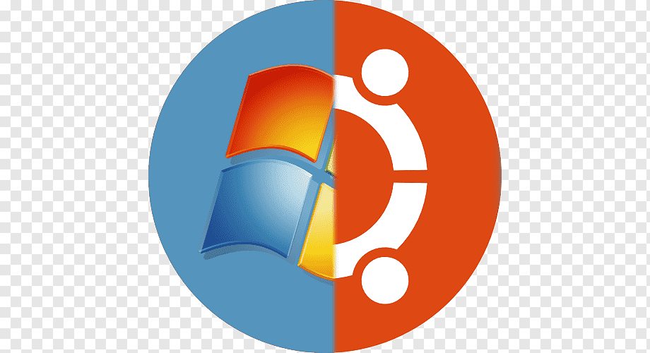
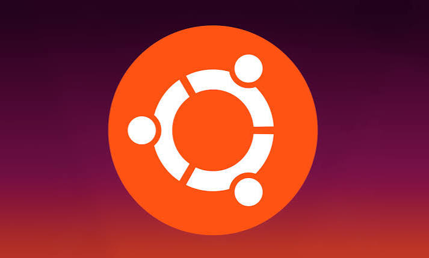

Linux es un sistema operativo de código abierto y gratuito ampliamente utilizado en servidores, supercomputadoras, dispositivos móviles y computadoras de escritorio, funcionando como el intermediario principal que administra el hardware y los programas de una máquina. A diferencia de otros sistemas, destaca por su flexibilidad y seguridad, ya que permite a usuarios y desarrolladores modificar y personalizar su código fuente según sus necesidades específicas. Entre sus funciones clave se encuentran la gestión eficiente de recursos, un alto rendimiento en multitarea y una robusta estabilidad que lo hace ideal para entornos empresariales y de desarrollo web. Lanzado originalmente por Linus Torvalds en 1991, el sistema no se distribuye como una única versión, sino a través de diferentes distribuciones o variaciones populares como Ubuntu, Fedora y Debian, las cuales se adaptan tanto a usuarios principiantes como a profesionales avanzados de la tecnología.
